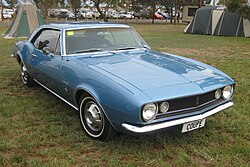

First Generation Camaro (1967 - 1969)
Chevrolet unveiled the first-generation Camaro in September 1966 for the 1967-1969 model years. Riding on the new rear-wheel-drive F-body platform, it was offered as a two-door hardtop or convertible and could be equipped with engines ranging from a 230 ci inline-six to a 396 ci V8. Developed as a conventional front-engine, rear-drive answer to Ford's Mustang, the Camaro shared components with the Chevy Nova and came in three key trim packages—Super Sport, Rally Sport, and, from December 1966, the track-oriented Z/28 featuring a 302 ci V8 and optional hood-and-deck stripes. This inaugural generation remained in production through 1969 and later inspired the retro styling of the fifth-generation Camaro.
